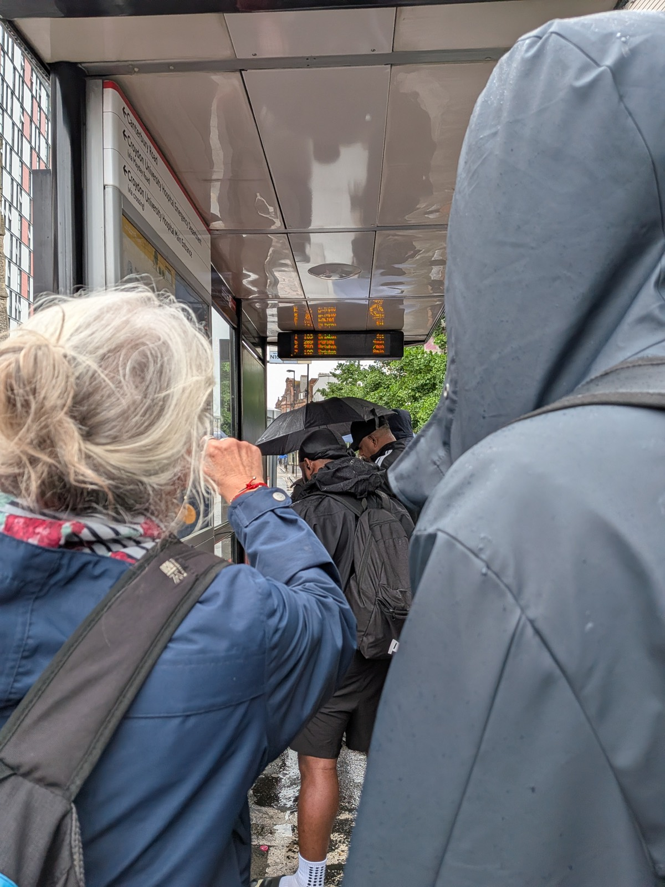
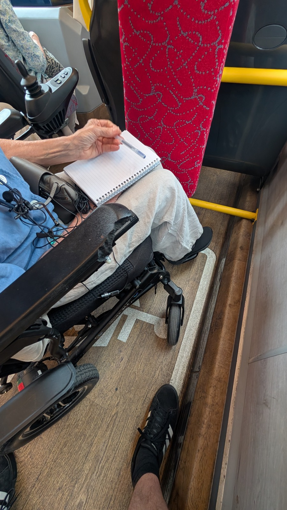

Research
Out and About
TACT ethnographic work has started

Think about your last visit to the hairdresser's. How did you explain what you wanted? Perhaps you pointed to a picture, showed how much you wanted taken off, or said "the usual" to someone who has cut your hair for years. Now imagine trying to describe that whole exchange afterwards.
After years of working with people with aphasia, we found ourselves returning to this difficulty. We had spent time together in workshops, heard about people's experiences and designed technologies together. Yet there was still so much about everyday communication that we were not seeing.
To understand more, we needed to spend more time together with our community.

So our research has taken us out onto the streets of London. Nine people with aphasia have welcomed us into their daily lives, inviting us into their homes and taking us to cafés, shops, museums and the hairdresser's. They chose where we went. We walked, talked, waited for buses and learned along the way.
There is a lot to notice when you have time to spend together. Something tucked into a bag before leaving home may help with a conversation later. And a moment when we think we should help may be one where the person wants time to try for themselves.
These details matter for what we design next. We are beginning with individual people and the things they want to do, working together on bespoke ways to support them. Spending this time together helps us understand where something new and meaningful might be useful and how it could fit into their lives.
We will be sharing more from these outings and the design work that follows. For now, a big thank you to everyone who has made room for us in their day.